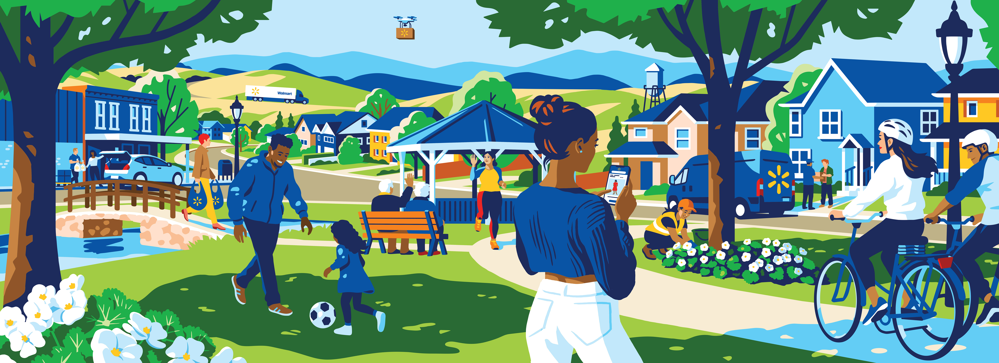

Flat, warm, character-driven illustration for editorial and campaign work — neighborhoods, farms, associates, delivery. Full library (pharmacy, meat/dairy/poultry, trucks, storefronts, plus corporate/marketing photography — store exteriors, business-transformation and analytics spot imagery) in assets/illustrations/scenes/. Two Cypress, TX mural/panorama reference photos live at assets/illustrations/cypress-tx-{panorama,mural-cropped}.pdf; assets/illustrations/trimming-guide.png is a print production reference, not a UI asset.